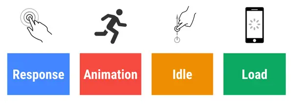

After that the most critical question arries is :
Ok‚Äô Now tell me how ? ü§û
So here is the answer...

According to wikipidea WPO(Web Performance Optimization) refers to the speed in which web pages are downloaded and displayed on the user's web browser.
Optimization is not like a one-time investment. It always takes time, actually, it takes time constantly. This is quite the same process as A/B testing. So you have to be passionate and keep checking what is a good fit for you.
Measure, Optimize and Monitor are three pillars for Web Performance optimization. Let’s take one or one of them and deep dive in them…
The measure is initialized level of this process. In this step, we have to test the current state of our website or web app. There is some great tool in the market those are doing a great job.

This is one of my favourites tool that provides personalized advice on how to improve your website across performance, accessibility, PWA, SEO, and other best practices.
If you are using Google Chrome then you can find it in Inscpect[Ctrl+Shift+I] mode within Audit panel. You can find more about Lighthose from here

Get the web's modern capabilities on your own sites and apps with useful guidance and analysis from web.dev. You can find more from here
Allows you to compare performance of one or more pages in controlled lab environment, and deep dive into performance stats and test performance on a real device. You can also run Lighthouse on WebPageTest. You can find more about WebPageTest from here

Allows you to diagnose webpage performance across devices and provides a list of fixes for improving the experience from Webpagetest and PageSpeed Insights. You can find more about TestMySite from here
Shows speed field data for your site, alongside suggestions for common optimizations to improve it. You can find more about PageSpeed Insights from here
This phase is very important and critical for your website performance. But you can’t imagen a good performance without considering about Rail Model.
RAIL is an acronym for “Response, Animation, Idle and Load.” The model categorizes user interactions under these four domains. Users have different expectations whenever they tap, click on or scroll over your various page elements. Therefore, the RAIL model measures each user interaction with different context-specific goals in mind.
Rail Model is more than a term it define the ideal way to ship your website or Web App to your users. There are multiple reasons why a website load slow:
We can write down dozens of reason why a website is slow but its time to mix those problems. In future, I will pe publish more blogs on each problem with solution. For not jump to third and last pillar.
As I said earlier that “Optimization is not like a one-time investment.” Once you are optimized your website and if you think it is enough, maybe you are wrong.